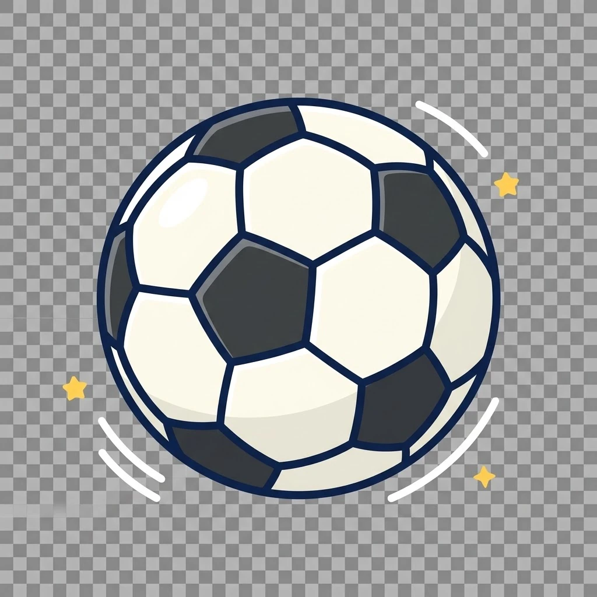

MATCH MODE RULEBOOK V9
HIGH DIFFICULTY 3v3 SOCCER BATTLE
A tactical card battle where every decision changes possession.
Card Encyclopedia


1. Setup & Team Formation
DEFENDER 1
First defensive line. Stops attacks before they reach the second line.
DEFENDER 2
Second defensive line. If no defense is played, the attack continues automatically.
GOALKEEPER
Final protection. Uses DEFENSE and Rock-Paper-Scissors.
Players receive equal cards. Teammates may exchange cards 1-for-1 before the match. Extra cards are discarded.
2. Possession & Passing
The player holding Soccer controls the attack.
3. Complete SHOOT Battle
D1 / D2 Choices
DEFENSE: Stops this SHOOT only. Soccer stays with attacker.
TACKLE: Stops attack and steals Soccer.
No action: The attacker passes this line automatically.
4. DRIBBLE PAST & Chase Back
DRIBBLE is used after a defender actually blocks with DEFENSE or TACKLE.
The defender may discard one card to chase back, or allow the attack to continue.
5. YELLOW CARD Timing
YELLOW belongs only to the current defensive line.
D1 YELLOW
Only during D1 defense. Cancels DRIBBLE or opponent YELLOW.
D2 YELLOW
Only during D2 defense. Cannot help D1.
YELLOW cannot cancel SHOOT or DEFENSE.
6. Goalkeeper Rules
If GK has no DEFENSE: GOAL.
If GK uses DEFENSE: Rock-Paper-Scissors decides SAVE or GOAL.
Goalkeeper Attack
When GK owns Soccer, GK may PASS or SHOOT.
7. Turnover Reset
Every successful TACKLE resets the entire attack.
8. Match Ending
Match ends after 10 minutes, or when neither team can create a valid attack.
One team losing SHOOT cards alone does not end the match.
9. Penalty Shootout
Real soccer style: 5 rounds.
Each attempt: Shooter draws one card. Opposing GK draws one new card.
SHOOT + no DEFENSE = GOAL.
SHOOT + DEFENSE = SAVE.
After 5 rounds, higher score wins. Tie continues with sudden death.